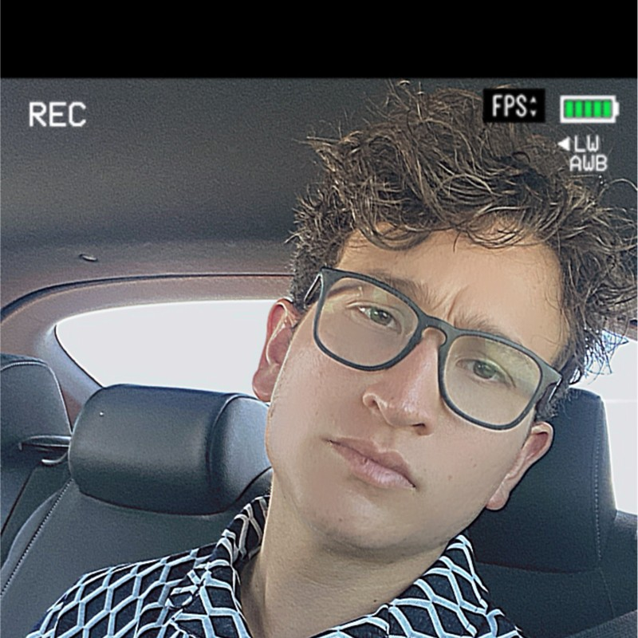

Uziel Cornejo Olivares
COMPUTER SCIENCE STUDENT
Currently coursing my 8th semester at CUCEl gaining experience over different projects, learning every day new things and trying to become a better programer with the
opportunities that i always fiend. Familiar with Scrum Agile methodology for an effective work and always with a great
sense of humor.
EDUCATION
Centennial High School - Class of 2018 August 2014 – June 2018 Pueblo, Colorado
Studying a Bachelor’s Degree: Computer Science
Centro Universitario de Ciencias Exactas e Ingeniería Universidad de Guadalajara Guadalajara, Jalisco, México
ADDITIONAL INFORMATION
Very compromise and responsible with my tasks. Positive with a very good sense humor, proactive and always looking forward to learning new things. I’m curious about new technologies and always trying to contribute on the best possible way to society. I always took the positive out of everything and I consider myself as a lover of team work, a problem solver, a self-taught person and a hard worker.
LANGUAGES
Spanish 100%
English 90%
CONTACT

3334802451

Arco tiberio #856
Age: 23
Nationality: American
Personal References
Garcia Madrigal Carlos Martin
Cucei Student
I have been able to work with uziel since the first semester, we formed a team without knowing each other, to tell the truth I consider him one of the best to work in a team, since he has very good communication and knows how to solve doubts at the moment.
Andrade Mendoza Christopher Iván
Cucei Student
Working with uziel was always very easy, each one was responsible for their work, in case of doubts we always solved it quickly since he is very applied and always tries to keep a very clean code to avoid future complications, uziel enjoys the work and always gives one hundred percent.
Abilities
Technical writing 85%
Mathematics 90%
Data analysis 70%
Software development 100%
Labor experience N/A
Project Experience
Restaurant City
At CUCEI, May 2022
During my 5th semester, my team and i design and develop a web application for a restaurant, with the web application you can place a date to go eat, select a place to seat and after you schedule a date the client receives
a qr code to show to the front desk in the restauran.
Computer Fault Tolerance
At CUCEI, December 2022
During my 6th semester i took the class computer fault tolerance and during the class we learn how to use different technologies like Docker, OpenShift, Kubernetes and Istio. In this class my team and i implemented all the technologies in one project and test the sturdiness
of the project using a tool call chaos monkey.
Data Structures
At CUCEI, 2019-2023
Since 2020 i started projects using different data structures some of the structures i use and implement are hash-map , binary tree, AVL tree, graphs and singly and doubly linked list.
TECHNICAL SKILLS
Programming Languages
C++ --> 100%
SQL --> 90%
SQlite --> 90%
JSON -->85%
Python -->80%
Php --> 75%.
Operating Systems
Windows --> 90%
Mac OSX --> 100%
Professional Interests
My interests range from learning new things to continue improving my knowledge, I would like to be part of a team to share knowledge and also to be able to help solve problems, I am interested in helping different communities by providing solutions to problems of everyday life.